← 本轮 smoke 总览traex/DeepSeek-V4.1-Flash · 0025
vision-agent · 256×144 · 4.0 FPS · 20 帧 · 状态 failed · 输出 tokens 51614
原始任务Static locked-off single-shot with fixed frame throughout filmed with constant framerate in real-time. The scene shows a realistic scientific demonstration. The scene only contains the described setup and actions. A piece of clear glass resting on the edge of a light-colored wooden table against a plain white wall. The blue tennis ball rolls from the wooden table over the glass.
尚无格式正确的 RGB 视频；保留真实执行状态。
已保存候选与代码修改
这里按时间展示外部捕获的候选，每份均可单独播放。保存新版本不等于完成视觉检查；下方工具证据记录实际看过的图。
可观测工具行为
命令 1 · 2026-11-08T21:41:43.227222+00:00/bin/bash -c "pwd && rg --files -g 'prompt.txt' -g 'GENERATION_RULES.md' -g '"'!*.mp4'"' -g '"'!*.webm'"' -g '"'!*.gif'"' | sort"
exit 0 命令 2 · 2026-11-08T21:41:43.477383+00:00/bin/bash -c 'ls -la'
exit 0 命令 3 · 2026-11-08T21:41:43.814459+00:00/bin/bash -c "find . -maxdepth 3 -type f \\( -name '*.py' -o -name '*.sh' -o -name '*.json' -o -name '*.md' \\) -print | sort | head -200"
exit 0 命令 4 · 2026-11-08T21:41:50.147668+00:00/bin/bash -c 'cat GENERATION_RULES.md'
exit 0 命令 5 · 2026-11-08T21:41:50.342630+00:00/bin/bash -c 'cat prompt.txt'
exit 0 命令 6 · 2026-11-08T21:41:50.555177+00:00/bin/bash -c "sed -n '1,240p' artifact_io.py"
exit 0 命令 7 · 2026-11-08T21:41:50.985644+00:00/bin/bash -c "sed -n '1,220p' player_template.html"
exit 0 命令 8 · 2026-11-08T21:41:57.607674+00:00/bin/bash -c "python - <<'PY'
from PIL import Image
im=Image.open('first_frame.png')
print(im.mode, im.size)
im.resize((1024,576)).save('.tmp/first_x4.png')
PY"exit 0 命令 9 · 2026-11-08T21:42:14.387459+00:00/bin/bash -c "python - <<'PY'
import importlib.util
for m in ['cv2','scipy','skimage','numpy','PIL','imageio','matplotlib']:
print(m, bool(importlib.util.find_spec(m)))
PY"
exit 0 命令 10 · 2026-11-08T21:42:14.571002+00:00/bin/bash -c 'ffmpeg -version | head -3; ffprobe -version | head -1'
exit 0 命令 11 · 2026-11-08T21:42:14.857250+00:00/bin/bash -c "find .tmp -maxdepth 2 -type f -printf '%p %s\\n' | sort"
exit 0 命令 12 · 2026-11-08T21:42:22.403745+00:00/bin/bash -c "python - <<'PY'
from PIL import Image
im=Image.open('first_frame.png')
for box,name in [((100,40,200,120),'ball'),((145,45,256,135),'glass'),((0,70,256,144),'lower'),((0,0,256,80),'upper')]:
im.crop(box).resize(((box[2]-box[0])*6,(box[3]-box[1])*6)).save(f'.tmp/{name}_x6.png')
PY"exit 0 命令 13 · 2026-11-08T21:42:37.669736+00:00/bin/bash -c "python - <<'PY'
import cv2, numpy as np
im=cv2.imread('first_frame.png')
hsv=cv2.cvtColor(im, cv2.COLOR_BGR2HSV)
# blue pixels: high saturation, blue hue
mask=((hsv[:,:,0]>95)&(hsv[:,:,0]<135)&(hsv[:,:,1]>70)&(hsv[:,:,2]>50)).astype(np.uint8)*255
n, labels, stats, cents=cv2.connectedComponentsWithStats(mask)
for i in range(1,n):
if stats[i,4]>5: print(i, stats[i].tolist(), cents[i].tolist())
cv2.imwrite('.tmp/bluemask.png',mask)
PY"exit 0 命令 14 · 2026-11-08T21:42:54.000799+00:00/bin/bash -c "python - <<'PY'
import cv2, numpy as np
im=cv2.imread('first_frame.png')
mask=np.zeros(im.shape[:2],np.uint8)
cv2.ellipse(mask,(131,77),(20,18),0,0,360,255,-1)
for rad in [3,7]:
out=cv2.inpaint(im,mask,rad,cv2.INPAINT_TELEA)
cv2.imwrite(f'.tmp/inpaint_telea{rad}.png',out)
out=cv2.inpaint(im,mask,5,cv2.INPAINT_NS)
cv2.imwrite('.tmp/inpaint_ns.png',out)
# patch from left x=77..117 to x=111..151 rows same, alpha ellipse feather
src=im[57:97,77:117].copy()
dst=im.copy()
alpha=np.zeros((40,40),np.float32)
cv2.ellipse(alpha,(20,20),(22,20),0,0,360,1,-1)
alpha=cv2.GaussianBlur(alpha,(11,11),3)
roi=dst[57:97,111:151].astype(np.float32)
roi=src.astype(np.float32)*alpha[:,:,None]+roi*(1-alpha[:,:,None])
dst[57:97,111:151]=roi.astype(np.uint8)
cv2.imwrite('.tmp/inpaint_patch.png',dst)
PY"exit 0 命令 15 · 2026-11-08T21:43:23.010161+00:00/bin/bash -c "python - <<'PY'
from PIL import Image
for n in ['inpaint_telea3','inpaint_telea7','inpaint_ns','inpaint_patch']:
im=Image.open(f'.tmp/{n}.png')
im.crop((95,50,170,110)).resize((600,480)).save(f'.tmp/{n}_zoom.png')
PY"exit 0 命令 16 · 2026-11-08T21:43:30.644879+00:00/bin/bash -c "python - <<'PY'
import numpy as np, cv2
im=cv2.imread('first_frame.png')[:,:,::-1]
# sample background rows left/right for ball region
for y in range(52,100,4):
print(y, [tuple(im[y,x]) for x in [105,110,115,145,150,155]])
PY"exit 0 命令 17 · 2026-11-08T21:43:35.248239+00:00/bin/bash -c "python - <<'PY'
from PIL import Image
for n in ['inpaint_ns','inpaint_patch']:
im=Image.open(f'.tmp/{n}_zoom.png')
print(n)
PY"exit 0 命令 18 · 2026-11-08T21:43:56.043179+00:00/bin/bash -c "python - <<'PY'
import cv2,numpy as np
im=cv2.imread('first_frame.png').astype(np.float32)
out=im.copy(); x0,x1,y0,y1=109,157,55,102
for y in range(y0,y1):
a=im[y,x0-1]; b=im[y,x1]
t=np.linspace(0,1,x1-x0+1)[1:-1,None]
# slight smooth cubic
t=t*t*(3-2*t)
out[y,x0:x1]=a*(1-t)+b*t
# texture transfer using source strip x=84:108; highpass
src=cv2.GaussianBlur(im[y0:y1,82:106],(0,0),2)
hi=im[y0:y1,82:106]-src
# tile/mirror highpass to fill region, fade at boundaries
h,w=x1-x0,y1-y0
tile=np.tile(np.concatenate([hi,hi[:,::-1]],axis=1),(1,4,1))[:h,:w]
# actually dims h,w; concatenate horizontal then crop
out[y0:y1,x0:x1]+=0.45*tile
out=np.clip(out,0,255).astype(np.uint8)
cv2.imwrite('.tmp/inpaint_rowtex.png',out)
# simple row only
out2=im.copy()
for y in range(y0,y1):
a=im[y,x0-1]; b=im[y,x1]
t=np.linspace(0,1,x1-x0+1)[1:-1,None]
out2[y,x0:x1]=a*(1-t)+b*t
cv2.imwrite('.tmp/inpaint_row.png',out2.astype(np.uint8))
PY"exit 1 命令 19 · 2026-11-08T21:44:02.652082+00:00/bin/bash -c "python - <<'PY'
import cv2,numpy as np
im=cv2.imread('first_frame.png').astype(np.float32)
out=im.copy(); x0,x1,y0,y1=109,157,55,102
for y in range(y0,y1):
a=im[y,x0-1]; b=im[y,x1]
t=np.linspace(0,1,x1-x0+1)[1:-1,None]
t=t*t*(3-2*t)
out[y,x0:x1]=a*(1-t)+b*t
# texture transfer from left strip, highpass, mirrored
src=cv2.GaussianBlur(im[y0:y1,80:109],(0,0),2)
hi=im[y0:y1,80:109]-src
h,w=y1-y0,x1-x0
tile=np.tile(np.concatenate([hi,hi[:,::-1]],axis=1),(1,4,1))[:h,:w]
# fade texture near boundary
wy=np.minimum(np.arange(h)+1,h-np.arange(h))[:,None]
wx=np.minimum(np.arange(w)+1,w-np.arange(w))[None,:]
fade=np.minimum(wy,wx)/5.0
out[y0:y1,x0:x1]+=0.35*tile*fade[:,:,None]
out=np.clip(out,0,255).astype(np.uint8)
cv2.imwrite('.tmp/inpaint_rowtex.png',out)
# simple row only
out2=im.copy()
for y in range(y0,y1):
a=im[y,x0-1]; b=im[y,x1]
t=np.linspace(0,1,x1-x0+1)[1:-1,None]
out2[y,x0:x1]=a*(1-t)+b*t
cv2.imwrite('.tmp/inpaint_row.png',out2.astype(np.uint8))
PY"exit 1 命令 20 · 2026-11-08T21:44:08.665256+00:00/bin/bash -c "python - <<'PY'
import cv2,numpy as np
im=cv2.imread('first_frame.png').astype(np.float32)
out=im.copy(); x0,x1,y0,y1=109,157,55,102
for y in range(y0,y1):
a=im[y,x0-1]; b=im[y,x1]
t=np.linspace(0,1,x1-x0+2)[1:-1,None]
t=t*t*(3-2*t)
out[y,x0:x1]=a*(1-t)+b*t
src=cv2.GaussianBlur(im[y0:y1,80:109],(0,0),2)
hi=im[y0:y1,80:109]-src
h,w=y1-y0,x1-x0
tile=np.tile(np.concatenate([hi,hi[:,::-1]],axis=1),(1,4,1))[:h,:w]
wy=np.minimum(np.arange(h)+1,h-np.arange(h))[:,None]
wx=np.minimum(np.arange(w)+1,w-np.arange(w))[None,:]
fade=np.minimum(wy,wx)/5.0
out[y0:y1,x0:x1]+=0.35*tile*fade[:,:,None]
out=np.clip(out,0,255).astype(np.uint8)
cv2.imwrite('.tmp/inpaint_rowtex.png',out)
out2=im.copy()
for y in range(y0,y1):
a=im[y,x0-1]; b=im[y,x1]
t=np.linspace(0,1,x1-x0+2)[1:-1,None]
out2[y,x0:x1]=a*(1-t)+b*t
cv2.imwrite('.tmp/inpaint_row.png',out2.astype(np.uint8))
PY"exit 0 命令 21 · 2026-11-08T21:44:13.775856+00:00/bin/bash -c "python - <<'PY'
from PIL import Image
for n in ['inpaint_row','inpaint_rowtex']:
Image.open(f'.tmp/{n}.png').crop((95,50,170,110)).resize((600,480)).save(f'.tmp/{n}_zoom.png')
PY"exit 0 命令 22 · 2026-11-08T21:44:24.655966+00:00/bin/bash -c "python - <<'PY'
import cv2,numpy as np
im=cv2.imread('first_frame.png')
g=cv2.cvtColor(im,cv2.COLOR_BGR2GRAY)
# print row/col gradients to find glass edges
for y in [46,50,55,60,70,80,90,100,110,120,130,140]:
xs=[]
row=g[y]
d=np.abs(np.diff(row.astype(int)))
idx=np.where(d>10)[0]
if len(idx): print('y',y,idx.tolist())
PY"exit 0 命令 23 · 2026-11-08T21:44:29.337310+00:00/bin/bash -c "python - <<'PY'
import cv2,numpy as np
im=cv2.imread('first_frame.png')
g=cv2.cvtColor(im,cv2.COLOR_BGR2GRAY)
for y in range(45,145,5):
row=g[y].astype(int)
# print x at brightness profile local min/max in 140+
vals=[(x,int(row[x])) for x in range(140,256,10)]
print(y, vals)
PY"exit 0 命令 24 · 2026-11-08T21:44:35.338500+00:00/bin/bash -c "python - <<'PY'
import cv2,numpy as np
im=cv2.imread('first_frame.png').astype(np.float32)
out=im.copy(); x0,x1,y0,y1=109,157,55,102
for y in range(y0,y1):
a=im[y,x0-1]; b=im[y,x1]
t=np.linspace(0,1,x1-x0+2)[1:-1,None]
t=t*t*(3-2*t)
out[y,x0:x1]=a*(1-t)+b*t
# take a wood patch far left, warp slightly; blend central rectangle only
patch=im[54:103,38:87]
# apply quadratic tone field match around
for y in range(y0,y1):
# source rows approx same, tone differences small
pass
out[y0:y1,x0:x1]=0.25*out[y0:y1,x0:x1]+0.75*patch
# smooth transition using soft alpha
alpha=np.zeros((y1-y0,x1-x0),np.float32); alpha[:]=1
# edge fade 6 px
for i in range(6):
f=(i+1)/7
alpha[i,:]=f; alpha[-1-i,:]=f; alpha[:,i]=np.minimum(alpha[:,i],f); alpha[:,-1-i]=np.minimum(alpha[:,-1-i],f)
roi=out[y0:y1,x0:x1].copy()
# use patch fully; tone texture likely okay
out[y0:y1,x0:x1]=patch*alpha[:,:,None]+roi*(1-alpha[:,:,None])
out=np.clip(out,0,255).astype(np.uint8)
cv2.imwrite('.tmp/inpaint_far.png',out)
PY"exit 1 命令 25 · 2026-11-08T21:44:40.998777+00:00/bin/bash -c "python - <<'PY'
import cv2,numpy as np
im=cv2.imread('first_frame.png').astype(np.float32)
out=im.copy(); x0,x1,y0,y1=109,157,55,102
for y in range(y0,y1):
a=im[y,x0-1]; b=im[y,x1]
t=np.linspace(0,1,x1-x0+2)[1:-1,None]
t=t*t*(3-2*t)
out[y,x0:x1]=a*(1-t)+b*t
patch=im[54:101,38:86]
# ensure mean near interpolation at boundaries
patch=patch + (out[y0:y1,x0:x1].mean((0,1))-patch.mean((0,1)))
alpha=np.ones((y1-y0,x1-x0),np.float32)
for i in range(8):
f=(i+1)/9
alpha[i,:]=np.minimum(alpha[i,:],f); alpha[-1-i,:]=np.minimum(alpha[-1-i,:],f)
alpha[:,i]=np.minimum(alpha[:,i],f); alpha[:,-1-i]=np.minimum(alpha[:,-1-i],f)
roi=out[y0:y1,x0:x1].copy()
out[y0:y1,x0:x1]=patch*alpha[:,:,None]+roi*(1-alpha[:,:,None])
out=np.clip(out,0,255).astype(np.uint8)
cv2.imwrite('.tmp/inpaint_far.png',out)
PY"exit 0 命令 26 · 2026-11-08T21:44:45.475683+00:00/bin/bash -c "python - <<'PY'
from PIL import Image
Image.open('.tmp/inpaint_far.png').crop((95,50,170,110)).resize((600,480)).save('.tmp/inpaint_far_zoom.png')
PY"exit 0 命令 27 · 2026-11-08T21:44:53.601544+00:00/bin/bash -c "python - <<'PY'
from PIL import Image
im=Image.open('first_frame.png')
for box,name in [((0,0,256,80),'top_half'),((140,45,256,144),'glass_x4'),((120,60,145,95),'ball_x10')]:
im.crop(box).resize(((box[2]-box[0])*4 if name"'!='"'ball_x10' else 400,(box[3]-box[1])*4 if name"'!='"'ball_x10' else 350)).save(f'.tmp/{name}.png')
PY"exit 0 命令 28 · 2026-11-08T21:45:21.288593+00:00/bin/bash -c "python - <<'PY'
from PIL import Image
import numpy as np
im=np.asarray(Image.open('first_frame.png'))
for xy in [(125,70),(131,67),(136,74),(132,82),(127,79),(120,78),(140,79),(130,89)]:
x,y=xy; print(xy, im[y,x].tolist())
# brightest/saturated blue stats
reg=im[55:100,105:155]
mask=(reg[:,:,2]>reg[:,:,0]+20)&(reg[:,:,2]>reg[:,:,1]+10)
v=reg[mask]
print('n',len(v),'min',v.min(0),'max',v.max(0),'mean',v.mean(0),'percentiles',np.percentile(v,[5,25,50,75,95],axis=0))
PY"exit 0 命令 29 · 2026-11-08T21:45:25.999510+00:00/bin/bash -c "python - <<'PY'
from PIL import Image
im=Image.open('first_frame.png')
# annotated grid image
from PIL import ImageDraw
im=im.resize((1024,576))
d=ImageDraw.Draw(im)
for x in range(0,256,10):
X=x*4; d.line((X,0,X,576),fill=(255,0,0),width=1)
if x%20==0:d.text((X+2,5),str(x),fill=(255,0,0))
for y in range(0,144,10):
Y=y*4; d.line((0,Y,1024,Y),fill=(255,0,0),width=1)
if y%20==0:d.text((2,Y+2),str(y),fill=(255,0,0))
im.save('.tmp/grid.png')
PY"exit 0 命令 30 · 2026-11-08T21:46:09.470143+00:00/bin/bash -c "python - <<'PY'
import cv2,numpy as np
im=cv2.imread('first_frame.png')
g=cv2.cvtColor(im,cv2.COLOR_BGR2GRAY)
# gradient arrays
gy=cv2.Sobel(g,cv2.CV_32F,0,1,ksize=3); gx=cv2.Sobel(g,cv2.CV_32F,1,0,ksize=3)
# strongest horizontal line locations in table region
for y in range(45,90):
print(y, float(np.mean(np.abs(gy[y,0:180]))), float(np.mean(np.abs(gx[y,150:256]))))
PY"exit 0 命令 31 · 2026-11-08T21:46:13.904376+00:00/bin/bash -c "python - <<'PY'
from PIL import Image
im=Image.open('first_frame.png')
im.crop((0,40,160,115)).resize((960,450)).save('.tmp/table_x6.png')
PY"exit 0 命令 32 · 2026-11-08T21:46:53.607604+00:00/bin/bash -c "python - <<'PY'
from PIL import Image
im=Image.open('first_frame.png')
# targeted annotate coordinates
from PIL import ImageDraw
crop=im.crop((100,50,160,100)).resize((600,500))
d=ImageDraw.Draw(crop)
for x in range(100,161,5):
X=(x-100)*10; d.line((X,0,X,500),fill=(255,0,0),width=1); d.text((X+2,2),str(x),fill=(255,0,0))
for y in range(50,101,5):
Y=(y-50)*10; d.line((0,Y,600,Y),fill=(255,0,0),width=1); d.text((2,Y+2),str(y),fill=(255,0,0))
crop.save('.tmp/ball_grid.png')
PY"exit 0 命令 33 · 2026-11-08T21:47:01.947190+00:00/bin/bash -c "python - <<'PY'
import cv2,numpy as np
im=cv2.imread('first_frame.png')
g=cv2.cvtColor(im,cv2.COLOR_BGR2GRAY).astype(float)
# find line equation manually sample edge x at y
for y in [50,60,70,80,90,100,110,120,130,140]:
# in x 145:230, find max positive horiz gradient around expected
row=g[y]
# derivative blur
d=np.convolve(row,[-1,0,1],'same')
x=max(range(145,min(225,256-2)),key=lambda x: d[x])
print(y,x,d[x])
PY"exit 0 命令 34 · 2026-11-08T21:47:07.242710+00:00/bin/bash -c "python - <<'PY'
import cv2,numpy as np
im=cv2.imread('first_frame.png')
g=cv2.cvtColor(im,cv2.COLOR_BGR2GRAY).astype(float)
for y in range(48,70):
row=g[y]
d=np.convolve(row,[-1,0,1],'same')
x=max(range(145,225),key=lambda x:d[x])
print(y,x,d[x], 'colors', im[y,x-2:x+3,::-1].tolist())
PY"exit 0 命令 35 · 2026-11-08T21:47:11.754891+00:00/bin/bash -c "python - <<'PY'
from PIL import Image
im=Image.open('first_frame.png')
im.crop((145,40,256,80)).resize((888,320)).save('.tmp/glass_top_x8.png')
PY"exit 0 命令 36 · 2026-11-08T21:47:20.975003+00:00/bin/bash -c "python - <<'PY'
from PIL import Image
import numpy as np
im=np.asarray(Image.open('first_frame.png'))
for y in [48,49,50,51,52,53,54,55,56]:
# compare left wood to right glass color at same y
print(y, 'wood',im[y,140].tolist(), 'glass',im[y,220].tolist(), 'wall',im[y,220].tolist())
PY"exit 0 命令 37 · 2026-11-08T21:47:25.322739+00:00/bin/bash -c "python - <<'PY'
from PIL import Image
im=Image.open('first_frame.png')
im.crop((145,65,230,100)).resize((850,350)).save('.tmp/glass_mid_x10.png')
PY"exit 0 命令 38 · 2026-11-08T21:47:33.855393+00:00/bin/bash -c "python - <<'PY'
import cv2,numpy as np
im=cv2.imread('first_frame.png')
# Find polygon boundaries using image gradients; print strong Hough lines
edges=cv2.Canny(im,50,120)
lines=cv2.HoughLinesP(edges,1,np.pi/180,threshold=30,minLineLength=30,maxLineGap=4)
for l in lines[:,0]:
x1,y1,x2,y2=l
if abs(y2-y1)>10 or x1>130:
print(l.tolist())
PY"exit 0 命令 39 · 2026-11-08T21:47:57.087936+00:00/bin/bash -c "python - <<'PY'
from PIL import Image
import numpy as np
im=np.asarray(Image.open('first_frame.png'))
# 21x25 ball crop stats, print HSV/luminance by coordinates
for y in range(64,90,2):
print(y, ['%3d'%int(im[y,x].mean()) for x in range(118,144,2)])
print('RGB grid selected')
for y in range(65,89,4):
print(y, [tuple(im[y,x]) for x in range(120,142,4)])
PY"exit 0 命令 40 · 2026-11-08T21:48:01.964950+00:00/bin/bash -c "python - <<'PY'
from PIL import Image
import numpy as np
im=np.asarray(Image.open('first_frame.png'))
# Ball bounding segmentation by difference from row interpolation maybe
# Crop and write channels / HSV
import cv2
reg=im[55:100,105:155]
cv2.imwrite('.tmp/ball_b.png',reg[:,:,2]); cv2.imwrite('.tmp/ball_g.png',reg[:,:,1]); cv2.imwrite('.tmp/ball_r.png',reg[:,:,0])
PY"exit 0 命令 41 · 2026-11-08T21:48:07.133665+00:00/bin/bash -c "python - <<'PY'
from PIL import Image
import numpy as np
im=np.asarray(Image.open('first_frame.png')).astype(float)
# print optical highlight local maxima in ball crop (blue relative)
for y in range(64,90):
vals=[]
for x in range(118,145):
r,g,b=im[y,x]
if b-r>35 and b-g>20: vals.append((b-r, x,y, int(b)))
if vals:
m=max(vals)
print(y,m[1:])
PY"exit 0 命令 42 · 2026-11-08T21:48:11.313028+00:00/bin/bash -c "python - <<'PY'
from PIL import Image
im=Image.open('first_frame.png')
im.crop((118,65,145,92)).resize((540,540)).save('.tmp/ball_core_x20.png')
PY"exit 0 命令 43 · 2026-11-08T21:49:20.173229+00:00/bin/bash -c "python - <<'PY'
import cv2, numpy as np
from PIL import Image
im=cv2.cvtColor(cv2.imread('first_frame.png'),cv2.COLOR_BGR2RGB)
h,w=im.shape[:2]
mask=np.zeros((h,w),np.uint8)
cv2.ellipse(mask,(131,77),(18,15),0,0,360,255,-1)
cv2.ellipse(mask,(142,84),(15,8),0,0,360,255,-1)
# widen dilation
mask=cv2.dilate(mask,cv2.getStructuringElement(cv2.MORPH_ELLIPSE,(3,3)))
clean=cv2.inpaint(cv2.cvtColor(im,cv2.COLOR_RGB2BGR),mask,4,cv2.INPAINT_TELEA)
clean=cv2.cvtColor(clean,cv2.COLOR_BGR2RGB).astype(np.float32)
# highpass texture from clean left patch
src=clean[58:94,72:112]
blur=cv2.GaussianBlur(src,(0,0),1.6)
hp=src-blur
# tile mirrored
h2,w2=clean.shape[:2]
tex=np.tile(np.concatenate([hp,hp[:,::-1]],axis=1),(3,3,1))[0:h2,0:w2]
# only mask interior with blurred alpha
alpha=mask.astype(np.float32)/255
alpha=cv2.GaussianBlur(alpha,(0,0),1.2)
clean=clean+0.65*tex*alpha[:,:,None]
clean=np.clip(clean,0,255).astype(np.uint8)
Image.fromarray(clean).save('.tmp/clean_proto.png')
PY"exit 1 命令 44 · 2026-11-08T21:49:26.317809+00:00/bin/bash -c "python - <<'PY'
import cv2, numpy as np
from PIL import Image
im=cv2.cvtColor(cv2.imread('first_frame.png'),cv2.COLOR_BGR2RGB)
h,w=im.shape[:2]
mask=np.zeros((h,w),np.uint8)
cv2.ellipse(mask,(131,77),(18,15),0,0,360,255,-1)
cv2.ellipse(mask,(142,84),(15,8),0,0,360,255,-1)
mask=cv2.dilate(mask,cv2.getStructuringElement(cv2.MORPH_ELLIPSE,(3,3)))
clean=cv2.inpaint(cv2.cvtColor(im,cv2.COLOR_RGB2BGR),mask,4,cv2.INPAINT_TELEA)
clean=cv2.cvtColor(clean,cv2.COLOR_BGR2RGB).astype(np.float32)
src=clean[58:94,72:112]
blur=cv2.GaussianBlur(src,(0,0),1.6)
hp=src-blur
tile=np.tile(np.concatenate([hp,hp[:,::-1]],axis=1),(3,3,1))
tex=np.zeros_like(clean)
tex[55:103,104:152]=tile[:48,:48]
alpha=mask.astype(np.float32)/255
alpha=cv2.GaussianBlur(alpha,(0,0),1.2)
clean=clean+0.65*tex*alpha[:,:,None]
clean=np.clip(clean,0,255).astype(np.uint8)
Image.fromarray(clean).save('.tmp/clean_proto.png')
PY"exit 0 命令 45 · 2026-11-08T21:49:57.046844+00:00/bin/bash -c "python - <<'PY'
import cv2, numpy as np
from PIL import Image
im=cv2.imread('first_frame.png')
mask=np.zeros(im.shape[:2],np.uint8)
cv2.ellipse(mask,(131,77),(18,15),0,0,360,255,-1)
cv2.ellipse(mask,(141,84),(14,8),0,0,360,255,-1)
mask=cv2.dilate(mask,cv2.getStructuringElement(cv2.MORPH_ELLIPSE,(3,3)))
# crop mask center 131,77 -> 48x48
x0,x1,y0,y1=107,155,53,101
m=mask[y0:y1,x0:x1]
# source patch x 71:119 y same
src=im[53:101,71:119]
for mode,name in [(cv2.NORMAL_CLONE,'normal'),(cv2.MIXED_CLONE,'mixed')]:
out=cv2.seamlessClone(src,im,m,(131,77),mode)
cv2.imwrite(f'.tmp/clone_{name}.png',out)
PY"exit 0 命令 46 · 2026-11-08T21:50:19.178203+00:00/bin/bash -c "python - <<'PY'
from PIL import Image
for n in ['clone_normal','clone_mixed','clean_proto']:
Image.open(f'.tmp/{n}.png').crop((95,50,170,110)).resize((600,480)).save(f'.tmp/{n}_zoom.png')
PY"exit 0 视觉工具实际返回图片 1
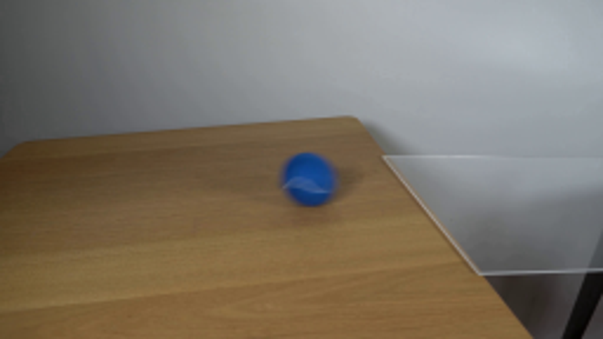
视觉工具实际返回图片 2
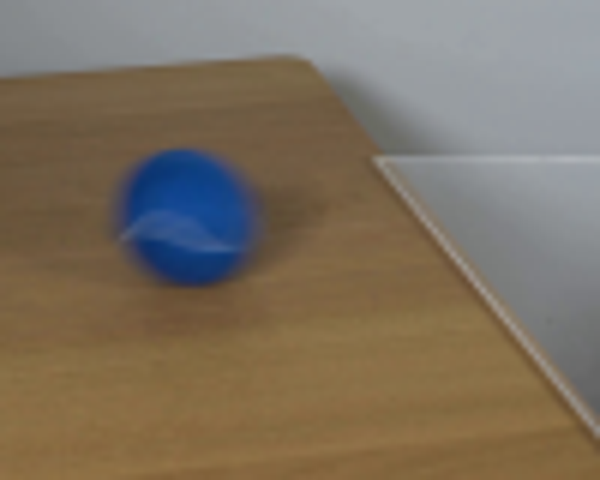
视觉工具实际返回图片 3
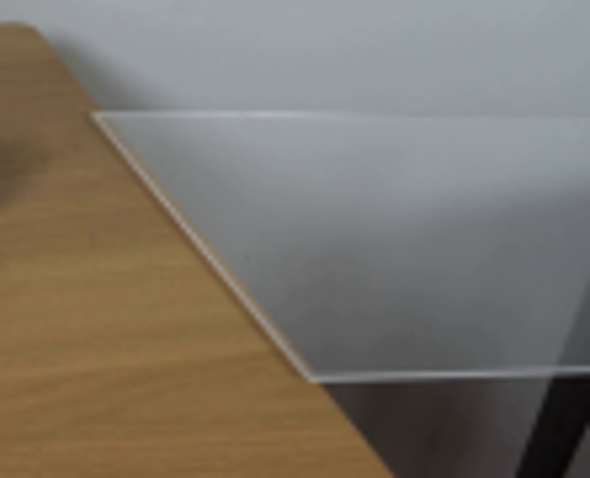
视觉工具实际返回图片 4
视觉工具实际返回图片 5
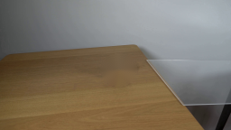
视觉工具实际返回图片 6
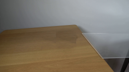
视觉工具实际返回图片 7
视觉工具实际返回图片 8
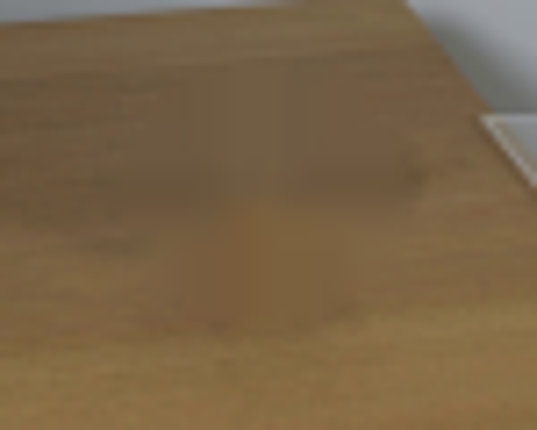
视觉工具实际返回图片 9
视觉工具实际返回图片 10
视觉工具实际返回图片 11
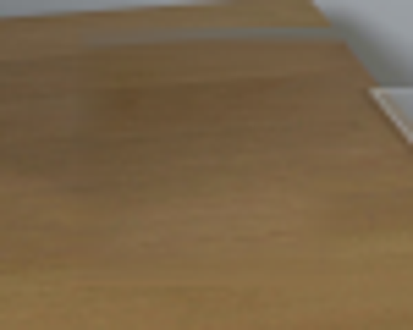
视觉工具实际返回图片 12
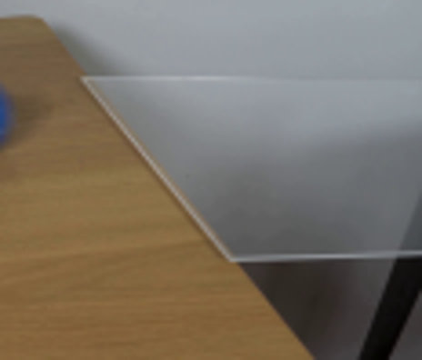
视觉工具实际返回图片 13
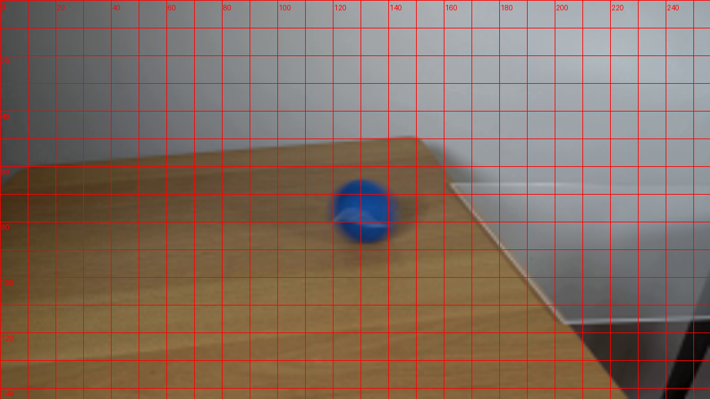
视觉工具实际返回图片 14
视觉工具实际返回图片 15
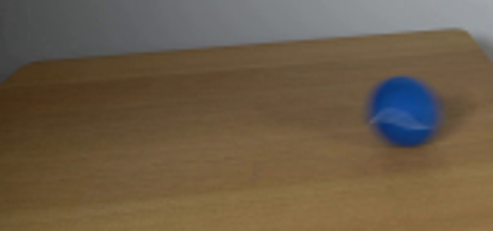
视觉工具实际返回图片 16
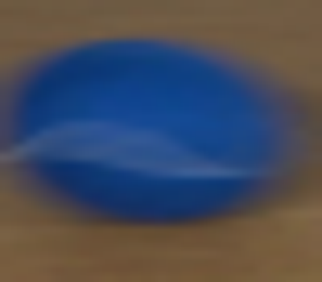
视觉工具实际返回图片 17
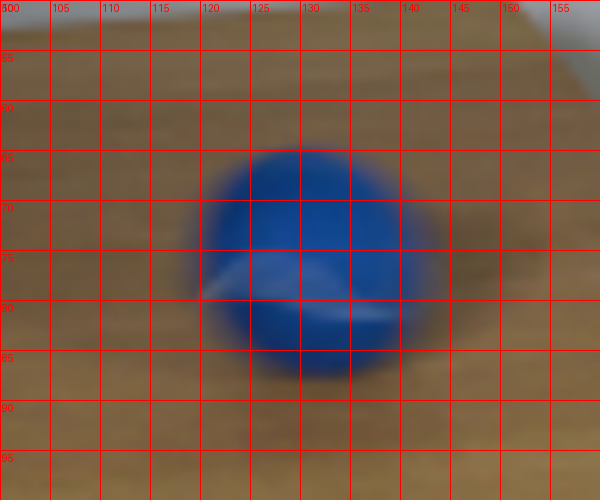
视觉工具实际返回图片 18
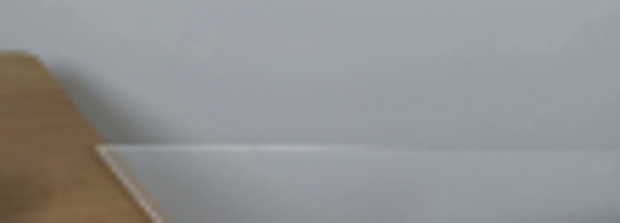
视觉工具实际返回图片 19
视觉工具实际返回图片 20
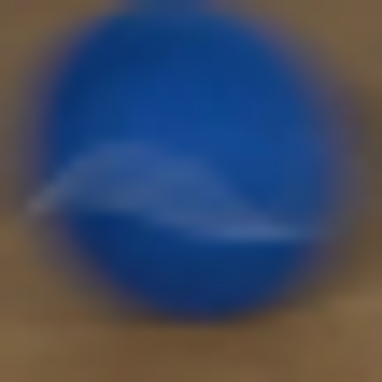
视觉工具实际返回图片 21
视觉工具实际返回图片 22
视觉工具实际返回图片 23
视觉工具实际返回图片 24
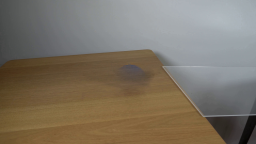
视觉工具实际返回图片 25
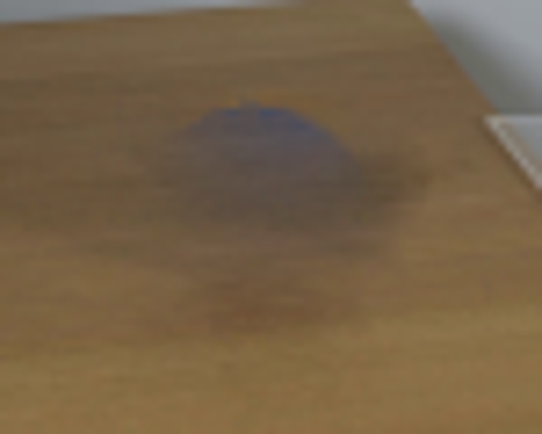
视觉工具实际返回图片 26
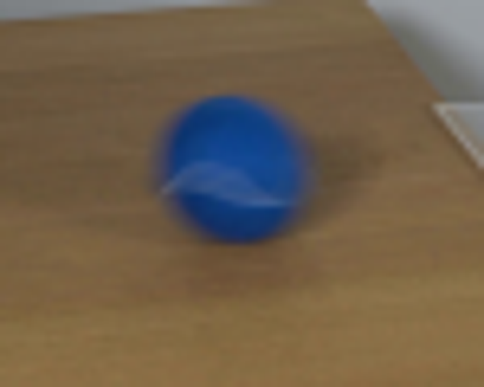
保存候选 0 份；完成命令 46 次；可验证图片返回 26 张。原始 API 响应与完整日志保留在本地。